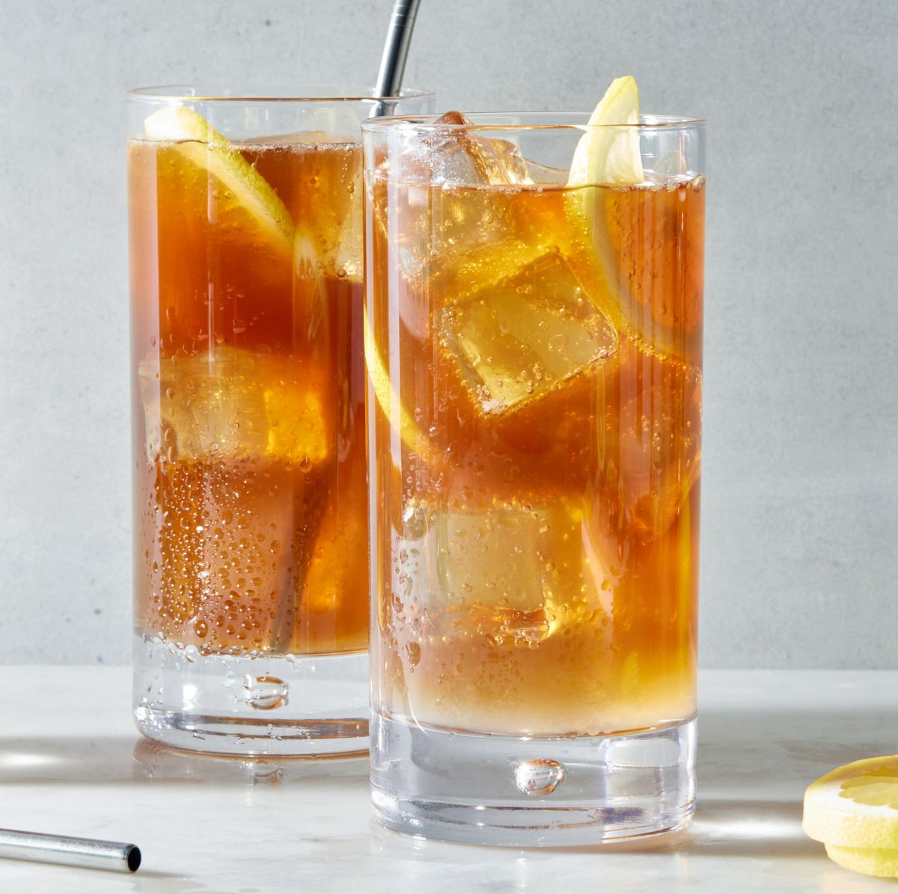

Long Island

Description
This is a classic, and one of my all time favorite recipes. It's quick, easy, and incredibly delicious!
Ingredients
- 1⁄2 oz. Vodka
- 1⁄2 oz. London Dry gin
- 1⁄2 oz. White rum
- 1⁄2 oz. Silver tequila
- 1⁄2 oz. Cointreau
- 3⁄4 oz. Fresh lemon juice
- 2 tsp. 2:1 simple syrup
- 3⁄4 oz. Coca-cola
Steps
- Add all ingredients except Coca-cola into a shaker
- Add ice to the shaker and shake to combine
- Get a collins glass and add ice to it
- Strain ingredients into collins glass
- Top collins glass with Coca-Cola and garnish with a lemon twist